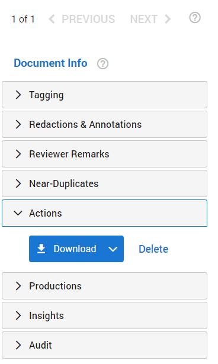
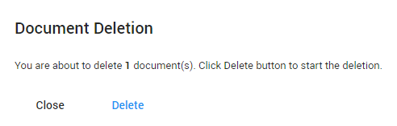

Note: Requires permission to download documents—see
|
|
Note: Requires permission to download documents—see |
Download the document currently opened. You can download the native (original) version, a PDF-file, or a PDF containing the redactions applied.
In Document View, on the right side of the screen, navigate to the right-hand panel and expand Actions.

A Delete button is added to Document View. Each user that has been assigned a role with the permission 'Delete Documents' can delete documents in Document View.

You need to confirm each deletion. If you delete a parent document, you will delete all child documents too (and thus delete multiple documents at once). If it is a child document, or not related to other documents, you will delete only 1 document.

When the document is deleted, the next document in the queue will be shown. If it was the last document in the queue, you will be redirected to the Document List.
|
|
Tip: You do not need to wait until completion of deletion. Just close and navigate to the next document. The document(s) will be deleted anyway. |